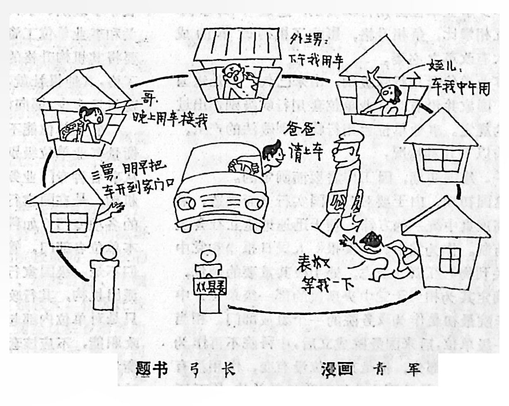

青军 《人事》1986年第1期（总第4期），第15页
无题（通讯《撕网》配图）
Untitled (drawing for the report “Tearing the Net”)
- Text in the drawing
- 哥，晚上用车接我 / 外甥：下午我用车 / 侄儿：车我中午用 / 爸爸，请上车 / 三舅：明早把车开到家门口 / 表叔：等我一下
Brother, pick me up with the car tonight / Nephew: I need the car this afternoon / Nephew: I'm using the car at noon / Dad, please get in / Third uncle: bring the car round to the door tomorrow morning / Cousin: wait for me - Passage illustrated
局长的妻子担任会计，三个副局长的四个儿子、女婿当司机。儿子为老子开车，妻子按丈夫的批示下帐，亲属关系与领导被领导的隶属关系搅和在一起，盘根错节……
The bureau chief's wife served as its accountant, and four sons and sons-in-law of the three deputy chiefs worked as its drivers. Sons drove for their fathers, wives entered expenses on their husbands' say-so; family ties and the chain of command were tangled together, roots and branches intertwined…From the report 撕网 (“Tearing the Net”) by Jia Xuhuai and Du Ping, pp. 14–15 of this issue, on Fanshi county, Shanxi; the drawing is printed at the end of the report. 贾绪怀、杜平《撕网》（通讯），本期第14–15页
- Description
- A ring of houses surrounds a single work car; from each window a relative books the official car for a private errand.
- Note
- The report describes Fanshi county, Shanxi, moving the relatives of bureau-level leaders out of their own units — breaking up what it calls “father-and-son armies” (父子军) and “husband-and-wife shops” (夫妻店). The boxed commentary 值得称道 (“Worthy of Praise”) by Li Shipu on the same page praises the campaign.
- Artist
- Qing Jun 青军
- Published in
- 《人事》1986年第1期（总第4期）, p. 15
- Themes
- Nepotism · Privilege

Cite
Qing Jun, “无题（通讯《撕网》配图）” [Untitled (drawing for the report “Tearing the Net”)], Renshi (Personnel) 《人事》, 1986, no. 1, p. 15.